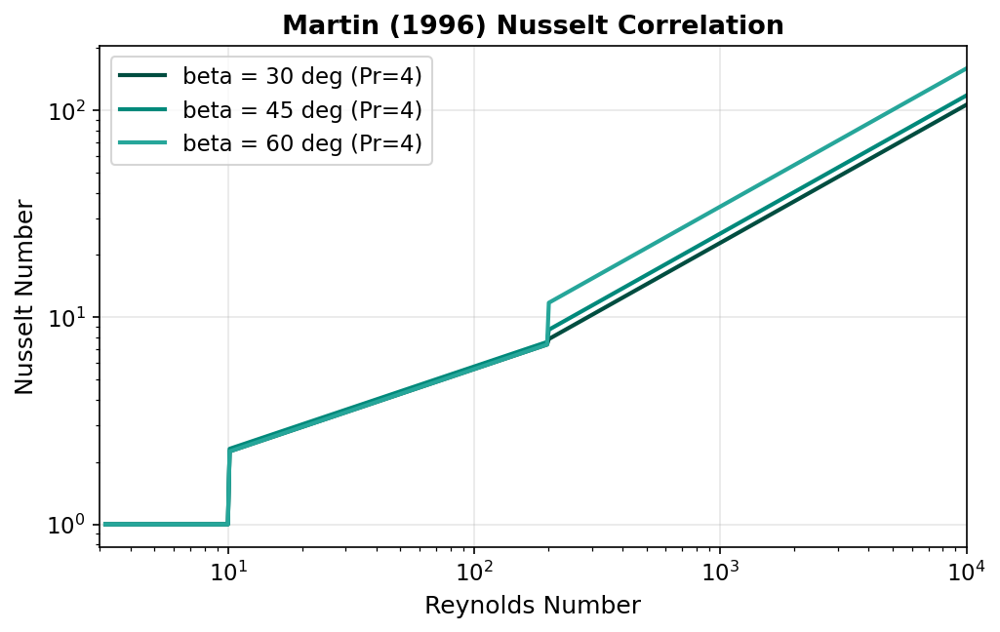

Heat Transfer Correlations¶
Overview¶
The convective heat transfer coefficient in a plate heat exchanger depends on the flow regime, fluid properties, and the chevron corrugation geometry. This unit operation employs the Martin (1996) generalised Leveque-type Nusselt correlation, which covers the full range of Reynolds numbers encountered in PHE operation through a piecewise formulation with three distinct regimes. The overall heat transfer coefficient is then assembled from the individual convective coefficients, wall conduction resistance, and fouling resistances.
Martin (1996) Nusselt Correlation¶
General Form¶
The Martin (1996) correlation expresses the channel-average Nusselt number as a power-law function of the Reynolds and Prandtl numbers (Martin, 1996):
where:
- \(\text{Nu} = h D_h / k\) — Nusselt number
- \(\text{Re} = G D_h / \mu\) — Reynolds number based on hydraulic diameter
- \(\text{Pr} = c_p \mu / k\) — Prandtl number
- \(C\) — empirical coefficient (depends on Re regime and chevron angle \(\beta\))
- \(n\) — Reynolds number exponent (depends on Re regime)
The convective heat transfer coefficient is recovered as:
Three-Regime Formulation¶
The correlation distinguishes three flow regimes based on the channel Reynolds number. The coefficients \(C\) and \(n\) vary with the regime:
| Regime | Reynolds Range | Coefficient \(C\) | Exponent \(n\) | Flow Character |
|---|---|---|---|---|
| 1 | \(\text{Re} < 10\) | 0.291 | 0.300 | Fully laminar |
| 2 | \(10 \le \text{Re} < 200\) | Depends on \(\beta\) | 0.400 | Transitional |
| 3 | \(\text{Re} \ge 200\) | Depends on \(\beta\) | 0.667 | Turbulent |
Chevron Angle Dependence
In Regimes 2 and 3, the coefficient \(C\) is a function of the chevron angle \(\beta\). The chevron angle (measured from the flow direction to the corrugation groove) typically ranges from 25 to 65 degrees. Higher chevron angles promote more turbulent flow and higher heat transfer at the cost of increased pressure drop (Shah & Focke, 1988).
Regime 1 — Fully Laminar (\(\text{Re} < 10\))¶
This regime corresponds to creeping flow through the corrugated channels, typical of highly viscous fluids or very low flow rates.
Regime 2 — Transitional (\(10 \le \text{Re} < 200\))¶
where \(C_2(\beta)\) is an empirically determined coefficient that increases with chevron angle \(\beta\) due to enhanced mixing in the corrugation troughs.
Regime 3 — Turbulent (\(\text{Re} \ge 200\))¶
The turbulent regime exhibits the strongest dependence on Reynolds number. The \(2/3\) exponent is characteristic of the Leveque analogy applied to corrugated channels, where the boundary layer is periodically disrupted by the chevron pattern (Martin, 1996).
Leveque Analogy
The classical Leveque solution for developing thermal boundary layers in a duct yields \(\text{Nu} \propto \text{Re}^{1/3}\). Martin (1996) showed that for chevron plates the effective exponent doubles to \(2/3\) because the corrugation pattern restarts the boundary layer at each contact point, analogous to a thermally developing flow repeated over many short segments.

Overall Heat Transfer Coefficient¶
The overall heat transfer coefficient \(U\) accounts for all thermal resistances in series between the hot and cold fluid streams:
where:
| Symbol | Description | Units |
|---|---|---|
| \(h_{\text{hot}}\) | Hot-side convective coefficient | W/m\(^2\)/K |
| \(h_{\text{cold}}\) | Cold-side convective coefficient | W/m\(^2\)/K |
| \(R_{f,\text{hot}}\) | Hot-side fouling resistance | m\(^2\)K/W |
| \(R_{f,\text{cold}}\) | Cold-side fouling resistance | m\(^2\)K/W |
| \(\delta_p\) | Plate thickness | m |
| \(k_p\) | Plate thermal conductivity | W/m/K |
The overall thermal conductance is:
Fouling Resistance¶
Fouling deposits on the plate surfaces introduce additional thermal resistance that degrades heat transfer performance over time. The fouling resistances \(R_{f,\text{hot}}\) and \(R_{f,\text{cold}}\) are user-specified parameters.
PHE Fouling Advantage
Plate heat exchangers exhibit lower fouling rates than shell-and-tube exchangers due to high wall shear stress and the absence of dead zones. Typical fouling resistances for PHEs are 2 to 10 times lower than the TEMA values used for shell-and-tube design (Kakac & Liu, 2002).
Recommended fouling resistances for plate heat exchangers:
| Service | \(R_f\) (m\(^2\)K/W) |
|---|---|
| Treated cooling water | 0.00002 -- 0.00004 |
| Untreated cooling water | 0.00004 -- 0.00008 |
| Soft water (boiler feed) | 0.00001 -- 0.00002 |
| Process oils | 0.00010 -- 0.00030 |
| Organic solvents | 0.00002 -- 0.00005 |
Typical Overall Heat Transfer Coefficients¶
The following table provides representative ranges of \(U\) for plate heat exchangers in various services:
| Hot-Side Fluid | Cold-Side Fluid | \(U\) Range (W/m\(^2\)/K) |
|---|---|---|
| Water | Water | 1000 -- 4000 |
| Water | Glycol solution | 600 -- 2000 |
| Water | Light oil | 200 -- 900 |
| Steam (condensing) | Water | 2000 -- 5000 |
| Light hydrocarbon | Water | 300 -- 700 |
| Organic solvent | Organic solvent | 100 -- 500 |
Reference
These ranges are compiled from Kakac & Liu (2002) and Shah & Focke (1988). Actual values depend on flow velocity, plate geometry, fluid viscosity, and fouling state.
Comparison with Other Correlations¶
Several alternative Nusselt correlations for chevron-plate heat exchangers have been published. The Martin (1996) correlation was selected for this implementation because of its broad Reynolds number coverage and explicit chevron angle dependence.
Kumar (1984)¶
Kumar (1984) proposed a set of piecewise correlations for chevron plates with coefficients tabulated for specific chevron angles (30 and 60 degrees). While widely cited, the Kumar correlation lacks a continuous dependence on \(\beta\) and requires interpolation between tabulated angles.
Muley & Manglik (1999)¶
Muley & Manglik (1999) developed a correlation based on experimental data for commercial chevron plates covering \(30 \le \beta \le 60\) degrees and \(1000 \le \text{Re} \le 10{,}000\). Their formulation explicitly includes the enlargement factor \(\phi\) and chevron angle but is limited to the turbulent regime.
Shah & Focke (1988)¶
Shah & Focke (1988) provided a comprehensive review of PHE thermal-hydraulic performance, presenting correlations from multiple investigators. Their work remains a key reference for understanding the influence of plate geometry on heat transfer and friction factor.
Limitations and Assumptions¶
The Martin (1996) correlation implemented in this unit operation is subject to the following limitations:
Key Assumptions
- Single-phase flow only — The correlation is not valid for two-phase (boiling or condensing) applications. Both streams must remain in the liquid or gas phase throughout the exchanger.
- Constant fluid properties per iteration — Properties (\(\rho\), \(\mu\), \(c_p\), \(k\)) are evaluated at the arithmetic mean bulk temperature of each stream and held constant within each solver iteration. Temperature-dependent property variation is captured through the outer iterative loop.
- Fully developed flow — Entry length effects at the port inlet are neglected. This is generally acceptable for PHEs with more than approximately 10 plates, where the repeated corrugation pattern dominates the thermal-hydraulic behaviour.
- No viscosity ratio correction — The Sieder-Tate viscosity correction \((\mu_b/\mu_w)^{0.14}\) is not applied. This may introduce error for highly viscous fluids where the wall-to-bulk viscosity ratio deviates significantly from unity.
- Chevron angle range — The correlation has been validated for \(20 \le \beta \le 65\) degrees. Extrapolation beyond this range is not recommended (Martin, 1996).